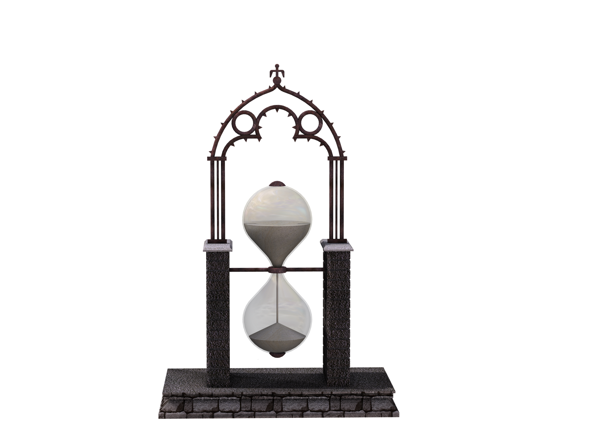

TIME MANAGEMENT

Time Management Tutorial
One of the skills that I can teach others is time management! I (almost) never procrastinate, and I keep my tasks very organized. Here are my methods for time management, and why they work for me:
| METHOD | PURPOSE |
|---|---|
| Keeping a rough outline of the day with time ESTIMATES | This helps me figure out what I am going to do today, and when. The times don't need to be exact, but knowing when I will be doing certain tasks allows me to plan more specifically, based on my rough outline. I also give myself a time frame for homework, because I want to make sure I get a good night's sleep (managing "sleep time" is just as important as managing "awake time"). |
| Doing my work when I come home from school or hanging out | This is probably a tough one for a lot of people. Nobody wants to do homework, especially not before taking time for more fun activities. A personal mindset I developed is to work first, play later, because once I finish all my work I won't have anything to burden me during my fun-time. Doing my homework right after showering / eating is the reason why I go to bed before 12:00 A.M. every night, even as a Brooklyn Tech student. |
| Keeping a physical or digital checklist so that I can check off my tasks, one-by-one. | A digital checklist is more helpful for me, because I tend to never look at my planners (to each their own, though). I usually keep the checklist open while I am doing work, so that I can check off each task once I complete it. This gives me a sense of accomplishment and makes me want to finish my work more, so I am basically manipulating myself into doing work. |